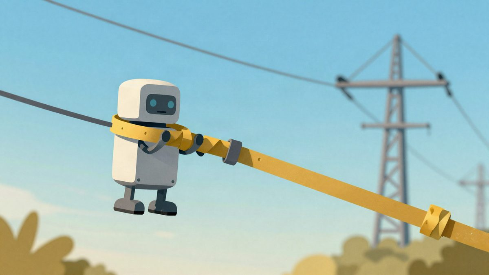

Unitreeov robot je osvojio prvi zlatni boksački pojas za humanoidne robote

Na boksačkoj večeri u Xiong'anu Unitreeov robot je pobijedio EngineAI-jevog u meču za prvi pojas za humanoidne robote iz sustava natjecanja WBC-a. Isti dan u Nanjingu počela je liga u kojoj je za pobjednika pripremljen pojas od 10 kilograma zlata.
Humanoidni robot tvrtke Unitree pobijedio je robota tvrtke EngineAI u boksačkom meču u kineskom Xiong'anu. Osvojio je ono što organizatori smatraju prvim zlatnim pojasom za humanoidne robote na svijetu. Meč je održan u sportskoj dvorani Xiong'an Sports Center, u sklopu priredbe 2026 China Xiong'an Asian Boxing Champions.
Roboti su izmjenjivali ravne udarce i krošee, a pobjednik je određen nakon nekoliko rundi. Na videu koji su objavili korisnici na internetu vidi se da se Unitreeov robot borio oko šest minuta prije nego što je dobio pojas. Robotski meč završio je prije glavnog dijela večeri.
Pojas iz profesionalnog sustava
Robotski meč bio je jedan od četiri dijela priredbe. Na programu su još bili borba za WBC-ov azijski pojas u teškoj kategoriji, WBC-ova profesionalna međunarodna rang-borba i turnir „Hebei Boxing Super League" za gradske internetske influencere. U glavnoj borbi Wuzati Nuerlang je nakon teškog okršaja pobijedio Wu Pengyanga i osvojio WBC-ov azijski pojas u teškoj kategoriji.
Ovaj se pojas razlikuje od ranijih robotskih demonstracija jer je dodijeljen unutar sustava profesionalnih boksačkih natjecanja koji je certificirao WBC. Humanoidni roboti tako su prvi put dobili naslov od treće strane s autoritetom u boksu. Dosad su proizvođači sami postavljali ring i sami odlučivali tko je pobijedio.
Liga u Nanjingu
Iste večeri u Nanjingu počeo je URKL City Tour Challenge. U osmerokutnom kavezu borila su se dva EngineAI-jeva robota T800, visoka 1,73 metra. Opisani su kao roboti za autonomnu AI borbu.
URKL je za pobjednika pripremio vlastiti pojas od deset kilograma čistog zlata, vrijedan 10 milijuna juana (oko 1,3 milijuna eura). Dobit će ga momčad koja osvoji ligu. Vlasnik pojasa još nije poznat, a svjetsko finale zakazano je za razdoblje od prosinca 2026. do siječnja 2027.
Izvor: MyDrivers (快科技)
Povezani članci
 Knight iz BLG-a proglašen MVP-em finala LoL Worlds 2026., BLG je s 3:1 pobijedio Gen.G15. studenoga 2026.
Knight iz BLG-a proglašen MVP-em finala LoL Worlds 2026., BLG je s 3:1 pobijedio Gen.G15. studenoga 2026.
Kineski robot od 30 kg izolira 30 metara dalekovoda pod naponom u 15 minuta20. studenoga 2026. Kineski robot za gašenje požara izdržao je 30 minuta u peći na 1.000 °C19. studenoga 2026.
Kineski robot za gašenje požara izdržao je 30 minuta u peći na 1.000 °C19. studenoga 2026.